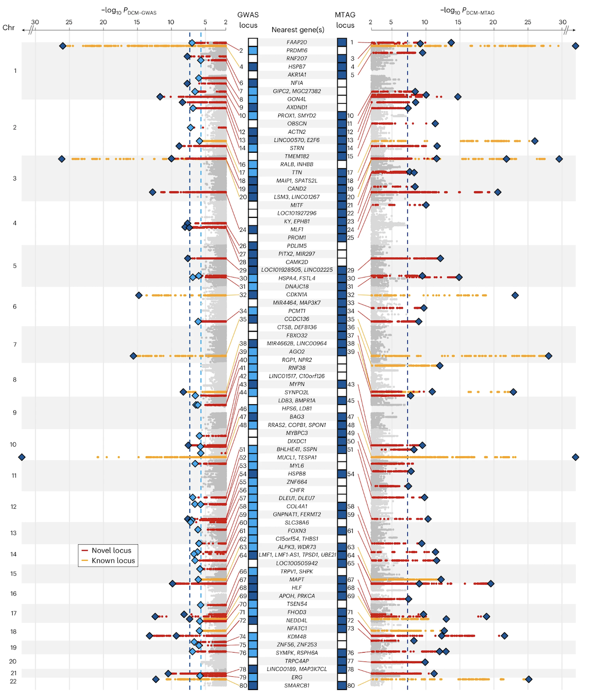
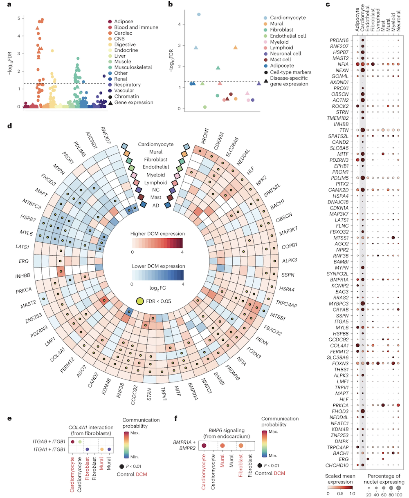
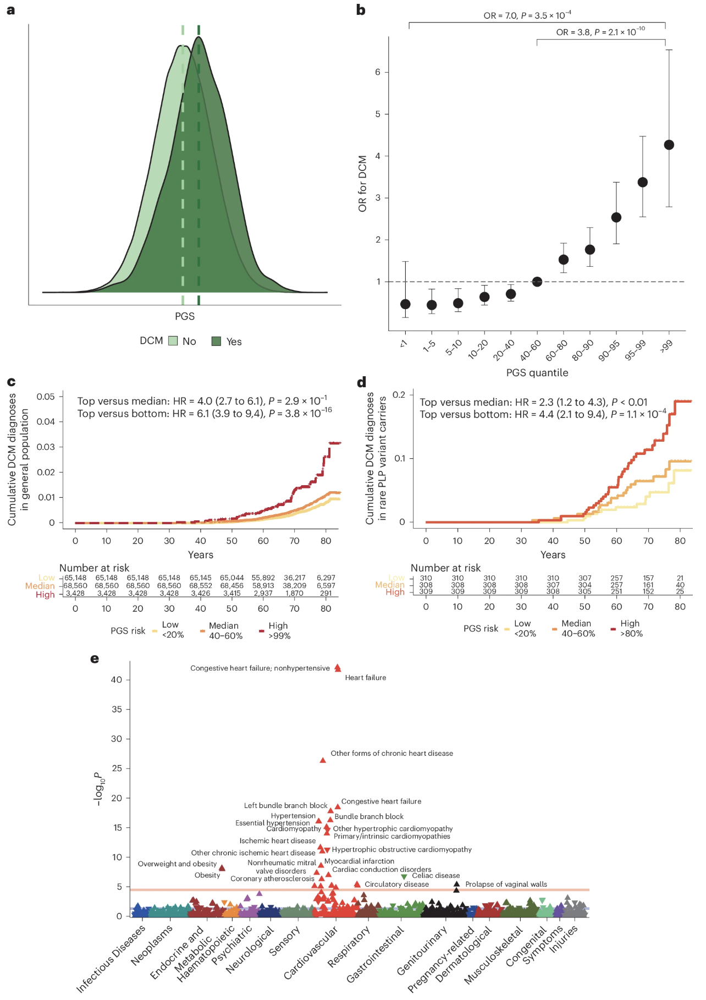

BSMS205 · Genetics
Introduction to
Chapter 18 · Part III · Complex Traits
Welcome to Chapter eighteen of BSMS two oh five Genetics. Today we tackle the workhorse method of modern complex-trait genetics — the Genome-Wide Association Study, or GWAS. In the last chapter we learned that height and most diseases are polygenic, with genes contributing roughly sixty to eighty percent of the variance. Today we ask the practical question that follows. Which genes? Which variants? How do we actually find them among three billion base pairs? This lecture is about the method — how it works, what its results look like, and why a tiny p-value of five times ten to the minus eight matters so much.
A question to start with
We know genes shape height.which genes?
Here is the question I want you to hold in your head for the next sixty minutes. From Chapter seventeen we know heritability of height is about eighty percent — genes do most of the work. But twin studies and variance partition do not name a single gene. They tell you the size of the contribution. They do not point at the molecules. So how do you go from "genes matter a lot" to "variant rs seven five six three nine on chromosome six is associated with height by zero point three centimeters"? That jump is the job of GWAS.
The needle-in-a-haystack problem
The genome has ~3 billion base pairs
~10 million common variants segregate in humansMost have tiny effect on any one trait
Pre-GWAS methods could only chase large -effect Mendelian genes
Need: a way to scan the whole genome , unbiased, at once.
Here is the scale of the haystack. Three billion base pairs. About ten million common variants — single-letter differences — that segregate in human populations. Most of these have tiny individual effects on any given trait. So small that you would never spot them by candidate-gene methods. Pre-GWAS, geneticists could only catch large-effect mutations — cystic fibrosis, sickle cell, Huntington's. Common variants with effect sizes of zero point one or zero point two of a standard deviation simply could not be found. We needed an unbiased, genome-wide scan. That is what GWAS gives us.
The core idea
Compare allele frequenciescases vs controls —millions of SNPs at once.
At its heart, GWAS is shockingly simple. Take two groups — people with the disease, people without. Genotype them at millions of single-letter positions across the genome. For each position, compare allele frequencies between the two groups. If a particular allele is more common in cases than controls, that variant is associated with the trait. The genius is not the statistics — the statistics are routine. The genius is doing it for one million positions simultaneously, in tens of thousands of people, with rigorous correction for the fact that you are testing one million hypotheses at once.
What we cover today
What GWAS is — and what it tests
Why the threshold is 5 × 10⁻⁸
How to read a Manhattan plot
How to read a QQ plot
Linkage disequilibrium · lead SNP ≠ causal SNP
Biobanks · ancestry · the DCM case study
What it gives us — and what it doesn't
Here is our roadmap. First, what GWAS is and what hypothesis it tests. Second, why the field uses an absurdly tiny p-value threshold of five times ten to the minus eight, and how that comes from the Bonferroni correction. Third, the Manhattan plot — the iconic visualization. Fourth, the QQ plot, which is how we know the result is trustworthy. Fifth, linkage disequilibrium, which tells us why the variant we hit is rarely the variant that does the damage. Sixth, the era of biobanks, ancestry diversity, and a real case study from twenty twenty-four. And finally, what GWAS does and does not deliver — which sets up Chapter nineteen on genetic architecture.
§ 1
What
Let's start with the fundamentals. What exactly does GWAS scan, and what does each test ask? Once these are clear, the rest of the lecture is just consequences.
SNPs · the alphabet of variation
SNP = Single Nucleotide PolymorphismOne-letter difference at a fixed genomic position
Common : minor allele frequency > 1%Not the rare disease-causing mutations of Mendelian disorders
The everyday genetic differences between people.
The unit of GWAS is the SNP — single nucleotide polymorphism. A SNP is just a position in the genome where some people carry an A and others carry a G, for example. We focus on common SNPs, defined as those whose minor allele appears in more than one percent of the population. These are not the rare mutations behind cystic fibrosis or Huntington's. These are the everyday genetic differences that make humans different from each other — eye color, height, propensity to heart disease. About ten million of them are common in any given human population.
Two flavors of GWAS
Case–control
People with vs without a disease
Test allele frequency difference
Effect size = odds ratio (OR)
e.g. heart disease, schizophrenia
Quantitative trait
Continuous measure across people
Test allele effect on the value
Effect size = beta (β)
e.g. height, BMI, cholesterol
GWAS comes in two flavors. Case-control studies compare people with a disease to people without. The output for each SNP is an odds ratio — how many times more likely cases are to carry the risk allele than controls. Heart disease, schizophrenia, type two diabetes are typical examples. Quantitative trait studies measure a continuous variable — height, body mass index, cholesterol — and test whether each SNP shifts the average value up or down. The effect size there is called beta, and it is in the units of the trait, like centimeters of height per copy of the allele. Same logic underneath, different output.
How do we measure SNPs?
SNP arrays
~500,000 to 1 million SNPs probed
Cheap : ~$30–50 per sampleImputation infers the rest
Whole-genome sequencing
Reads every base
~$200–1,000 per sample
Captures rare variants too
Most GWAS still use arrays + imputation — biobank-scale.
How do you measure a million SNPs in a hundred thousand people? Two routes. SNP arrays are tiny chips that probe somewhere between five hundred thousand and one million pre-selected positions. They cost about thirty to fifty dollars per sample, and statistical imputation — using linkage disequilibrium patterns — fills in several million more positions you didn't directly genotype. Whole-genome sequencing reads every single base and is now down to a couple hundred dollars in some places. But for biobank-scale studies, arrays plus imputation are still the workhorse because they are cheaper and the imputed data are remarkably accurate.
The single test, repeated millions of times
For every SNP i : test whether allele frequency differs between cases and controls
Output: a p-value — between 0 and 1
Small p = data unlikely if SNP had no effect
That is all a single GWAS test does
At the level of a single SNP, the test is simple. Compare the allele count in cases versus controls, run a chi-squared or logistic regression, get a p-value. The p-value is a number between zero and one that asks: if this SNP truly had no effect on the trait, how often would we see data this extreme by chance alone? Small p-value means data are surprising under the null hypothesis. That is it. The whole apparatus of GWAS is repeating this routine test about one million times, then dealing with the consequence — which is the multiple-testing problem we will tackle next.
§ 2
Why
Now the most important number in GWAS — the genome-wide significance threshold. Five times ten to the minus eight. Where does this oddly specific number come from? It is not arbitrary. It is the answer to a real statistical problem.
The multiple testing problem
Test 1 SNP at p < 0.05 : 5% false-positive rate — fine
Test 1,000,000 SNPs at p < 0.05: expect 50,000 false positives
You'd find "associations" where there are none
The naïve threshold is useless at genome scale
Here is the problem. In a single experiment, p less than zero point zero five is the conventional threshold — it means a five percent false-positive rate, which most fields tolerate. But in GWAS we run not one test but one million. If you used p less than zero point zero five for every SNP, you would expect five percent of one million — that is fifty thousand SNPs — to look "significant" purely by chance. Fifty thousand false positives in your output. The signal would be drowned in noise. So we need a much, much stricter threshold.
The Bonferroni correction
αgenome-wide = α / Ntests = 0.05 / 1,000,000 = 5 × 10⁻⁸
~1 million independent common-variant tests in the genome
Divide α = 0.05 by 1,000,000 → keeps total false-positive rate ≈ 5%
Conservative · but reproducible across studies
The fix is the Bonferroni correction — divide your overall alpha by the number of independent tests you are running. We estimate there are about one million independent common-variant tests across the human genome — many SNPs are correlated through linkage disequilibrium, so the effective number is much smaller than the raw number genotyped. Take alpha equals zero point zero five, divide by one million, and you get five times ten to the minus eight. That is the threshold. It keeps your overall false-positive rate at roughly five percent across the whole genome scan. It is conservative, yes — but it is the reason GWAS hits replicate.
The threshold
5 × 10⁻⁸
genome-wide significance · p-value
= 0.00000005 — five in one hundred million
= −log₁₀(p) ≈ 7.3 on the y-axis
Universal across modern GWAS
Just to sit with the number — five times ten to the minus eight equals zero point zero zero zero zero zero zero zero five. That is five in one hundred million. On the y-axis of a Manhattan plot, where we plot minus log ten of the p-value, this becomes about seven point three. That is the dashed line you see on every GWAS Manhattan plot ever published. SNPs above the line cross genome-wide significance. SNPs below it do not. This single number is the price of admission for being called a GWAS hit, and it is the same in every modern study around the world.
What "significant" actually means
A p < 5 × 10⁻⁸ result rejects the nullnot prove causation.
The SNP itself may not be the causal variant
Could be a nearby variant in linkage disequilibrium
Could reflect population stratification
Statistical association ≠ biological mechanism
One subtlety to absorb. Crossing the threshold rejects the null hypothesis. It does not prove that the SNP causes the trait. The SNP you flagged might just be sitting next to the real causal variant on the chromosome — they are correlated through linkage disequilibrium, which we will cover in a few slides. The signal might also reflect population stratification — different ancestral groups in your cases versus controls. Statistical association is the start of the biology, not the end. A GWAS hit is a flag on a region; figuring out the actual causal variant and the actual mechanism is the next decade of work.
§ 3
The
Now the iconic visualization of GWAS. Once you have run one million tests and produced one million p-values, how do you make sense of them all? Two plots — Manhattan and QQ. The Manhattan plot tells you where the signals are. The QQ plot tells you whether they are real. Let's start with Manhattan.
The skyline of significance
x-axis: chromosomal position · chr 1 → chr 22
y-axis: −log₁₀(p) for each SNP
Each dot = one SNP
Dashed line at y ≈ 7.3 = the 5 × 10⁻⁸ threshold
Peaks above the line look like the Manhattan skyline .
Here is the anatomy of a Manhattan plot. The x-axis is genomic position — start at chromosome one, walk through to chromosome twenty-two and the X chromosome. The y-axis is minus log ten of the p-value, so bigger means more significant. We use minus log ten because the actual p-values are tiny — zero point zero zero zero zero zero zero one — and unwieldy. A p of zero point zero five becomes one point three on the y-axis. A p of five times ten to the minus eight becomes seven point three. The dashed horizontal line at seven point three is the genome-wide threshold. Every dot is a SNP. The skyscrapers above the line are your hits.
Why −log₁₀? · scaling tiny numbers
p-value −log₁₀(p) Interpretation
0.05 1.3 Conventional · noise at GWAS scale 10⁻⁵ 5.0 Suggestive 5 × 10⁻⁸ 7.3 Genome-wide significant 10⁻¹⁰ 10.0 Strongly significant 10⁻²⁰ 20.0 Massive — large effect or huge N
Why minus log ten? Because raw p-values are uncomfortable. Reading "five times ten to the minus eight versus three times ten to the minus twelve" is harder than reading "seven point three versus eleven point five." On a log scale, every step of one on the y-axis is a tenfold change in p-value. So a SNP at minus log ten of ten is one thousand times more significant than one at seven. A SNP at twenty is ten trillion times more significant than five times ten to the minus eight. The biggest hits in real GWAS — like FTO for body mass index — sit at minus log ten values above one hundred. Stratospheric.
A real Manhattan plot · DCM

Figure 1. Manhattan plot from a dilated cardiomyopathy (DCM) GWAS. 14,256 cases · 1,199,156 controls · 80 genome-wide significant loci . Red = newly discovered loci, orange = previously reported. Zheng et al. 2024, Nature Genetics.
Here is the real thing. This is the Manhattan plot from a twenty twenty-four study of dilated cardiomyopathy — DCM — a heart muscle disease. Fourteen thousand two hundred fifty-six cases, one point one nine million controls, and eighty genome-wide significant loci above the dashed line. Each peak is a chromosomal region where the heart muscle disease genetics lights up. Red dots are newly discovered loci in this study; orange dots are loci that had been reported before. Notice how the peaks cluster — that clustering is the signature of linkage disequilibrium, which we will discuss in a few slides. Source is Zheng and colleagues, Nature Genetics, twenty twenty-four.
How to read a peak
A peak = many neighboring SNPs all significant
The top SNP in a peak is called the lead SNP
Lead SNP is reported · but rarely the causal variant itself
Width of the peak = extent of LD in that region
Each Manhattan peak is not one SNP — it is many neighboring SNPs all crossing significance together. The single SNP with the smallest p-value in the peak is called the lead SNP, and that is what gets reported in the paper. But — and this is critical — the lead SNP is rarely the actual variant that causes the biological effect. It is just a tag. The width of the peak depends on how strong linkage disequilibrium is in that region of the genome. Tight peaks mean low LD, narrow tagging. Wide peaks mean a long stretch of correlated variants, any one of which could be causal.
§ 4
The QQ Plot —
The Manhattan plot tells you where signals are. But how do you know they are real signals and not artifacts? Population stratification, technical batch effects, and confounding can all manufacture fake associations across the whole genome. Enter the QQ plot — the quality-control sibling of the Manhattan plot.
The idea · expected vs observed
If no SNP truly affected the trait → p-values are uniform on [0, 1]
Plot expected −log₁₀(p) on x-axis · observed −log₁₀(p) on y-axis
All-null world: points fall on the diagonal y = x
Real signals: tail rises above diagonal — only at the right edge
The principle is simple. Suppose no SNP in the genome had any real effect. Then the p-values from one million tests should be uniformly distributed between zero and one. So if you sort the observed p-values and plot them against what you would expect under the uniform null, the points should fall right on the diagonal line y equals x. That is the all-null world. When there are real signals, you should see most points still on the diagonal — most SNPs have no effect — but the tail at the upper right should peel off above the diagonal. Those are your real hits.
What a good QQ plot looks like
Healthy
Bulk on diagonal
Tail rises sharply at far right
Genomic inflation λ ≈ 1
Confounded
Whole distribution shifted upInflation across the board
λ ≫ 1 → population stratification
Two patterns to recognize. A healthy QQ plot has the bulk of points sitting on the diagonal, with the tail rising sharply at the top right where your real hits live. The inflation factor lambda — the ratio of observed to expected median chi-square — should be close to one, meaning roughly one point zero zero to one point zero five. A confounded QQ plot looks different. The whole distribution has lifted off the diagonal — even SNPs in the middle of the cloud sit above where they should. Lambda is much greater than one. That is the signature of population stratification or some other genome-wide confounder, and you cannot trust your hits until it is corrected.
Population stratification · the classic trap
Cases and controls drawn from different ancestries
Allele frequencies naturally differ between populations
Result: fake trait association at every ancestry-divergent SNP
Fix: include principal components or linear mixed models
Here is the classic GWAS trap. Suppose your case group is enriched for one ancestry and your control group for another. Allele frequencies naturally differ between populations for all sorts of reasons — genetic drift, historical migrations, founder effects. Now every SNP whose frequency happens to differ between the two populations will look "associated" with the trait, even if it has nothing to do with the biology. Disaster. The fix is to include genetic principal components as covariates in the regression — components that capture the ancestry axes — or to use linear mixed models that account for relatedness. Modern GWAS pipelines do this automatically.
Manhattan + QQ · the standard pair
Manhattan tells you where the signals are.whether they are real.
Every GWAS paper shows both
If the QQ is bad, the Manhattan is meaningless
Read them together, in that order
These two plots travel together. Every credible GWAS paper shows both. The QQ plot is the validation — does the overall p-value distribution behave the way it should under the null, except at the tail? If yes, the Manhattan plot is trustworthy and you can interpret the peaks as real biology. If the QQ plot is inflated across the board, the Manhattan plot is meaningless, no matter how impressive the peaks look — the signal is artifact. So when you read a GWAS paper, glance at the QQ first, then go to the Manhattan. In that order.
§ 5
Linkage Disequilibrium
Now the part that confuses new GWAS readers more than anything. The lead SNP at the top of a Manhattan peak is usually not the variant that causes the biology. To understand why, we need linkage disequilibrium.
What is linkage disequilibrium?
Variants that are physically close on a chromosome
...tend to be inherited together across generations
Their alleles are correlated across people
Genome partitions into LD blocks — regions of high correlation
Linkage disequilibrium — LD for short — is the statistical correlation between alleles at nearby positions on the same chromosome. The intuition is recombination. Each generation, chromosomes get cut and pasted, but the cuts happen at a finite rate. Two variants that sit very close together on a chromosome are almost never separated by a recombination event over thousands of generations. So they get inherited as a unit. People who have allele A at position one tend to have allele G at position two, and so on. The genome breaks naturally into blocks where everything inside a block is highly correlated.
Why peaks have width
If the causal SNP is associated with the trait...
...every SNP in LD with it is also associated
The whole LD block lights up — that is the peak
Lead SNP is just the top tag , not necessarily the cause
GWAS hits a region , not a variant.
Now here is the consequence. Suppose there is one true causal SNP in some chromosomal region. Because it is correlated with all its LD partners, every nearby SNP also shows an association with the trait — they all carry the same allele in cases more often than controls. So instead of one significant SNP, you see a whole block lighting up — that is the peak in the Manhattan plot. The SNP with the very smallest p-value, the lead SNP, is just the strongest tag for the underlying signal. It might be the causal variant, but more likely it is one of dozens of correlated variants. GWAS hits a region. Fine-mapping hits a variant.
Lead SNP ≠ causal SNP
What you see
Lead SNP : smallest p in the peakReported in the paper
Usually non-coding
What it means
"Causal variant lives somewhere in this LD block"
Block can span 10 kb to 1 Mb
Often contains multiple genes
Practical consequence for reading GWAS papers. The headline lead SNP is rarely the molecular cause. Most lead SNPs sit in non-coding regions — promoters, enhancers, introns — because non-coding variants are far more numerous than coding ones. The biological interpretation goes like this: somewhere in the LD block tagged by this lead SNP, there is one or more variants that affect gene expression or splicing in a relevant tissue. The block can be ten kilobases short or a megabase long, and it might contain multiple genes. Identifying the actual causal variant requires fine-mapping, expression QTL data, and functional follow-up — a whole industry of post-GWAS analysis.
Effect sizes · how big is small?
Variant type Trait Effect size
Mendelian (e.g. BRCA1 ) Breast cancer OR ≈ 5–10 Common GWAS hit Heart disease OR ≈ 1.05–1.20 Common GWAS hit Height β ≈ 0.1–0.5 cm Top FTO variant BMI β ≈ 0.4 kg/m²
Common variants: tiny individually, but thousands of them .
Let's calibrate effect sizes. A Mendelian disease mutation in BRCA one raises breast cancer risk five- to tenfold — huge. A typical common GWAS variant for heart disease raises risk by five to twenty percent — odds ratio one point zero five to one point two zero. For continuous traits like height, the per-allele effect is zero point one to zero point five centimeters. Even the famous F-T-O variant for body mass index moves you only about zero point four kilograms per meter squared per copy. These effects are tiny individually. But there are thousands of such variants for any complex trait, and they sum. That additive sum is the polygenic score, which Chapter nineteen will dig into.
§ 6
Biobanks &
Now the era we live in. Modern GWAS power comes from biobanks — million-person collections of genotypes plus health records. Let me walk you through the one you should know, and then through the dilated cardiomyopathy study that ties everything together.
UK Biobank · the workhorse
~500,000 participants in the UK
Genotyped on a ~800,000-SNP array · imputed to ~90 million
Linked to health records , hospital codes, deaths, imaging
Powers thousands of GWAS papers — every year
The UK Biobank is the prototype. Half a million volunteers in the United Kingdom, recruited starting in two thousand six. Each was genotyped on a roughly eight-hundred-thousand-SNP array, then statistically imputed up to about ninety million SNPs. Critically, each participant is linked to their National Health Service records — diagnoses, hospitalizations, medications, deaths — plus brain imaging, blood tests, lifestyle questionnaires. That linkage is the magic. Researchers can now run GWAS on essentially any trait or disease that shows up in those records. The UK Biobank alone has powered tens of thousands of papers. Other biobanks — FinnGen, BioBank Japan, the Million Veteran Program — work the same way.
Why scale matters · power
Effect sizes are tiny → need massive N to detect them
Doubling N → roughly 4× more genome-wide hits (rough scaling)
2007 height GWAS: 20 hits · 2022 height GWAS: ~12,000 hits
The whole field is N-limited
Why does sample size matter so much? Because the per-SNP effect sizes for common variants are tiny — odds ratios of one point one or beta of zero point one of a standard deviation. Detecting that with statistical confidence at p less than five times ten to the minus eight requires huge numbers. As a rough rule, doubling N quadruples the number of significant hits you find. The trajectory of height GWAS makes this concrete. The first big height GWAS in two thousand seven, with about ten thousand people, found twenty significant loci. The twenty twenty-two height GWAS with five million people found about twelve thousand. The field is fundamentally limited by sample size, which is why biobanks are everything.
The ancestry problem
~80% of GWAS participants are of European ancestry
LD patterns & allele frequencies differ across populations
European-trained results transfer poorly to other groups
Solution: trans-ancestry GWAS — diverse cohorts
And here is the field's most uncomfortable problem. As of twenty twenty-four, more than eighty percent of all GWAS participants worldwide are of European ancestry. Linkage disequilibrium patterns, allele frequencies, and lead SNPs differ across populations. So a result trained on Europeans can transfer poorly when applied to people of African, East Asian, or South Asian ancestry. That creates a health-equity disaster — the genomic medicine that rolls out of GWAS works best for the populations already over-represented in research. The fix is trans-ancestry GWAS — building cohorts with diverse populations and analyzing them jointly. The DCM study we are about to look at is one of the better examples.
Case study · DCM in 1.2 million people
Dilated cardiomyopathy (DCM) : heart muscle weakens & enlarges14,256 cases · 1,199,156 controls · multi-ancestry80 loci reach 5 × 10⁻⁸Genes near hits: MAP3K7 , NEDD4L , SSPN
Hits cluster in muscle structure , cell adhesion , ECM pathways
Let's anchor with a real study. Dilated cardiomyopathy is a heart muscle disease — the heart muscle becomes weak and enlarged, often leading to heart failure. Zheng and colleagues, in twenty twenty-four, ran a multi-ancestry GWAS with fourteen thousand two hundred fifty-six cases and one point two million controls. They found eighty loci passing genome-wide significance. The hits clustered near genes like MAP3K seven, NEDD4L, and SSPN — names you do not need to memorize. What matters is that when they looked at all eighty loci together, the genes converged on a few biological themes: muscle structure, cell adhesion, and extracellular matrix. That is the post-GWAS magic — eighty scattered hits revealing a coherent biology.
Functional convergence · 80 loci, 3 themes

Figure 2. Eighty scattered DCM loci converge on a small number of pathways — sarcomere structure, cell adhesion, extracellular matrix — and on specific cell types (cardiomyocytes, fibroblasts). Zheng et al. 2024, Nature Genetics.
Here is the cell-type and pathway picture. Eighty loci scattered across the genome, but when you ask which pathways and which cell types are enriched among the candidate genes, a coherent picture emerges. Pathways related to sarcomere structure — the contractile units of muscle cells — light up. So do pathways for cell adhesion and extracellular matrix organization. And in single-nucleus RNA sequencing, the risk genes are most expressed in cardiomyocytes and fibroblasts — exactly the cells that build the heart. Eighty entry points, but they all lead into the same biological building. That convergence is how a polygenic disease can have a single coherent phenotype.
From GWAS to risk prediction

Figure 3. A polygenic score built from the 80 DCM loci, applied to UK Biobank: top 10% of PGS has ~2.8× the disease risk of the bottom 10%. PGS modifies penetrance even in carriers of rare pathogenic variants. Zheng et al. 2024, Nature Genetics.
And here is what GWAS hits buy you in the clinic. The same eighty loci can be combined into a polygenic score — a single number summarizing each person's genetic liability. When you compute that score across the UK Biobank's half-million people, the top decile has about two point eight times the risk of DCM compared to the bottom decile. Just from common variants. And — this is the elegant part — even in people who already carry a known rare pathogenic mutation in TTN or LMNA, polygenic background still matters. High PGS plus rare mutation is much more dangerous than low PGS plus the same mutation. Polygenic background modifies the penetrance of so-called Mendelian disease. We will go deeper on PGS next chapter.
§ 7
What GWAS Gives —
Before we wrap, let's be honest about what GWAS does and does not deliver. It is a powerful method, but it has well-known limits, and Chapter nineteen will pick up exactly where these limits stop.
What GWAS gives
An unbiased scan of common variation
A list of genomic loci (not exact variants)
Effect sizes and direction for each lead SNP
Pathways and cell types via downstream analysis
Polygenic scores for risk stratification
The wins. GWAS gives you an unbiased, hypothesis-free scan of common variation across the entire genome. It hands you a list of genomic loci where common variants are associated with the trait. It tells you the direction and approximate magnitude of each effect. With downstream pathway and cell-type analyses, it tells you which biological themes the trait runs through. And by summing over all loci, it gives you polygenic scores that can stratify individuals by genetic risk. That is a lot — and it has transformed how we study every common disease and every quantitative trait.
What GWAS doesn't give
The causal variant within an LD block
The mechanism by which a variant acts
Effects of rare variants (MAF < 1%)
Non-additive interactions (epistasis, dominance)
Reliable predictions in under-sampled ancestries
And the honest limitations. GWAS does not tell you which variant in the LD block is causal — that is fine-mapping. It does not tell you the mechanism — that is functional follow-up in cells, organoids, mice. It is mostly blind to rare variants below one percent allele frequency, because there is not enough statistical power per SNP — for those you need exome sequencing or whole-genome sequencing. It does not capture epistasis or dominance well, because everything is approximated as additive. And it transfers poorly across populations when one ancestry dominates the discovery cohort. These are all open frontiers — and Chapter nineteen on genetic architecture will name them more precisely.
§ 8
Summary
Let's pull everything together.
What to take away
GWAS = scan millions of SNPs for trait association
Threshold: 5 × 10⁻⁸ · Bonferroni for ~1M independent tests
Manhattan = where signals are · QQ = whether they're realLead SNP ≠ causal SNP — blame linkage disequilibrium
Biobanks (UK Biobank, ~500k) made the modern era possible
Five takeaways. One — GWAS scans millions of SNPs across the genome and tests each one for association with a trait, comparing cases versus controls or measuring quantitative effects. Two — the genome-wide significance threshold is five times ten to the minus eight, which comes from the Bonferroni correction for about one million independent common-variant tests. Three — the Manhattan plot tells you where the signals are; the QQ plot tells you whether they are real and not artifacts of population stratification. Four — the lead SNP at the top of a peak is rarely the variant that does the biology, because linkage disequilibrium drags whole regions along. Five — biobanks like UK Biobank, with about half a million participants, are what made today's GWAS scale possible.
Next lecture
GWAS gives us hits.shape
Chapter 19 · Genetic Architecture of Complex Traits
One question to leave you with. Chapter eighteen has shown us how to find common-variant hits — eighty for DCM, twelve thousand for height. But hits are the inventory. They do not yet tell us the shape. How many variants total? How big are their effects on average? How much heritability is captured by current GWAS, and how much remains hidden? Are diseases driven by a few moderate-effect variants or thousands of tiny ones? That question — the genetic architecture question — is what Chapter nineteen is about. See you next time.